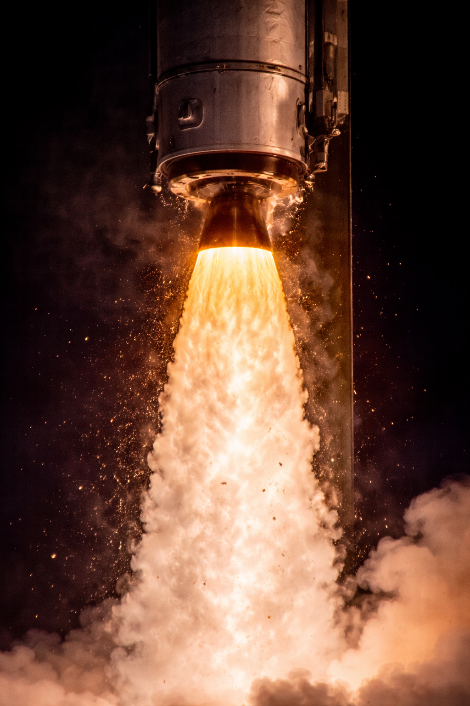

Rocket Science
Rocket propulsion is based on Newton's Third Law of Motion: for every action there is an equal and opposite reaction.
Rocket Thrust Equation
F = ṁ Ve + (Pe − Pa) Ae
Where:
- F = Thrust
- ṁ = Mass flow rate
- Ve = Exhaust velocity
- Pe = Exit pressure
- Pa = Atmospheric pressure
- Ae = Nozzle exit area
Tsiolkovsky Rocket Equation
ΔV = Ve ln (m₀ / m_f)
This equation determines the change in velocity a rocket can achieve based on exhaust velocity and mass ratio.
Rocket Engine Diagram

A rocket engine consists of a combustion chamber, nozzle and propellant feed system. High-pressure combustion gases expand through the nozzle producing thrust.
Rocket Propulsion System

AI generated illustration of a rocket propulsion system
Rocket propulsion systems generate thrust by expelling high-velocity exhaust gases through a nozzle. According to Newton's Third Law of Motion, the reaction force produced by the exhaust accelerates the rocket in the opposite direction. Modern rocket engines consist of a combustion chamber, injector system and converging-diverging nozzle which accelerates hot gases to supersonic velocity.
- Solid Propellant Rockets
- Liquid Propellant Rockets
- Hybrid Rockets
- Electric Propulsion